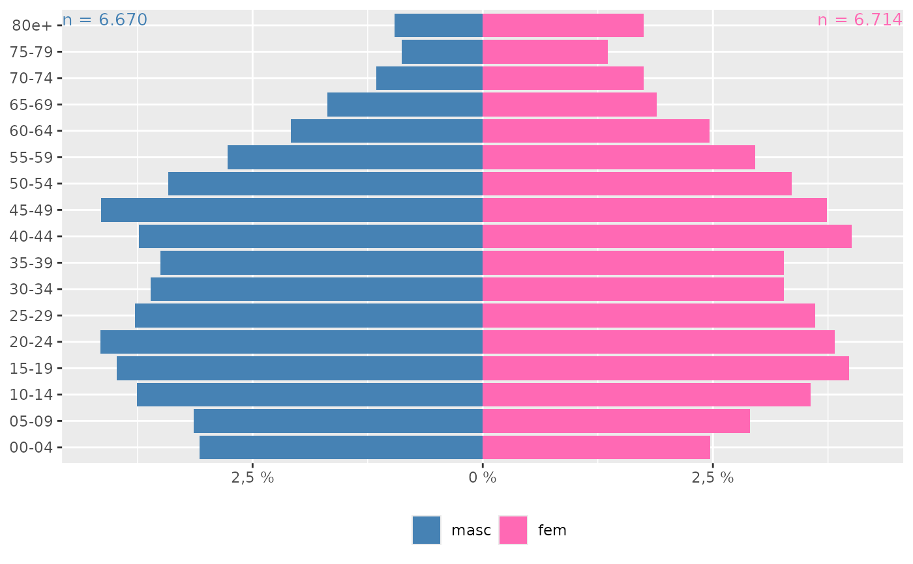

Pirâmides populacionais
ggplot_pir.RdPirâmides populacionais
Arguments
- banco
Um
data framecom população ou casos por sexo e faixa etária.- idade
Nome da variável com a idade ou faixa etária deve ir entre aspas.
- sexo
Nome da variável com o sexo; deve ir entre aspas e ser um
factor.- populacao
Nome da variável (entre aspas) com a população ou casos, se houver; por padrão é
NULL, isto é, a função espera um banco de registros individuais e calcula a frequência por sexo e faixa etária indicada.- catsexo
Vetor com o nome das categorias da variável sexo; padrão é
c("masc", "fem"); o sexo masculino deve ser a primeira categoria.- cores
Cores das barras, para as categorias masculino e feminino. O padrão é
c("darkblue", "violetred").- nsize
Tamanho do texto com o nº total de habitantes. O padrão é 3.5.
Examples
data("POPBR12")
str(POPBR12)
#> 'data.frame': 367290 obs. of 6 variables:
#> $ MUNIC_RES: int 110001 110001 110001 110001 110001 110001 110001 110001 110001 110001 ...
#> $ ANO : int 2012 2012 2012 2012 2012 2012 2012 2012 2012 2012 ...
#> $ SEXO : int 1 1 1 1 1 1 1 1 1 1 ...
#> $ SITUACAO : int 3 3 3 3 3 3 3 3 3 3 ...
#> $ FXETARIA : int 0 101 202 303 404 505 606 707 808 909 ...
#> $ POPULACAO: int 187 186 187 190 193 198 204 211 219 226 ...
# "SEXO" é da classe 'integer';
# além disso, os primeiros 19 anos de idade estão em faixas anuais
# e os demais (até 80) em faixas quinquenais.
if (FALSE) { # \dontrun{
ggplot_pir(POPBR12, "FXETARIA", "SEXO", "POPULACAO")
} # }
# não dá o gráfico desejado.
# Transformando o sexo em fator e reclassificando a faixa etária:
require(dplyr)
#> Loading required package: dplyr
#>
#> Attaching package: ‘dplyr’
#> The following objects are masked from ‘package:stats’:
#>
#> filter, lag
#> The following objects are masked from ‘package:base’:
#>
#> intersect, setdiff, setequal, union
POPBR12 <- POPBR12 %>%
mutate(SEXO = factor(SEXO, labels = c("masc", "fem")),
FXETAR5 = fxetar.det_pra_fxetar5(FXETARIA))
ggplot_pir(POPBR12, "FXETAR5", "SEXO", "POPULACAO")
# Cerro Largo, RS
ggplot_pir(POPBR12[POPBR12$MUNIC_RES==430520, ],
"FXETAR5", "SEXO", "POPULACAO")

# ## Mortalidade por anos completos de vida
# Se o banco é de registros individuais, sem uma variável com a
# contagem da população, a função conta as frequências em cada
# sexo e faixa etária específicos.
data("obitosRS2019")
str(obitosRS2019)
#> 'data.frame': 10000 obs. of 91 variables:
#> $ ORIGEM : chr "1" "1" "1" "1" ...
#> $ TIPOBITO : chr "2" "2" "2" "2" ...
#> $ DTOBITO : chr "30082019" "25102019" "11062019" "09102019" ...
#> $ HORAOBITO : chr "1800" "0439" "0730" "1415" ...
#> $ NATURAL : chr "843" "843" "843" "843" ...
#> $ CODMUNNATU: chr "430420" "431440" "431440" "431840" ...
#> $ DTNASC : chr "05091938" "17101948" "18051989" "02071950" ...
#> $ IDADE : chr "480" "471" "430" "469" ...
#> $ SEXO : chr "1" "1" "1" "2" ...
#> $ RACACOR : chr "1" "1" "1" "1" ...
#> $ ESTCIV : chr "2" "4" "1" "3" ...
#> $ ESC : chr "4" "4" "9" "9" ...
#> $ ESC2010 : chr "2" "3" "9" "9" ...
#> $ SERIESCFAL: chr "8" NA NA NA ...
#> $ OCUP : chr "999993" "517205" "354705" "999992" ...
#> $ CODMUNRES : chr "430300" "431440" "431440" "430270" ...
#> $ LOCOCOR : chr "1" "1" "3" "1" ...
#> $ CODESTAB : chr "2266474" "2252295" NA "2693801" ...
#> $ ESTABDESCR: chr NA NA NA NA ...
#> $ CODMUNOCOR: chr "430300" "431440" "431440" "431490" ...
#> $ IDADEMAE : chr NA NA NA NA ...
#> $ ESCMAE : chr NA NA NA NA ...
#> $ ESCMAE2010: chr NA NA NA NA ...
#> $ SERIESCMAE: chr NA NA NA NA ...
#> $ OCUPMAE : chr NA NA NA NA ...
#> $ QTDFILVIVO: chr NA NA NA NA ...
#> $ QTDFILMORT: chr NA NA NA NA ...
#> $ GRAVIDEZ : chr NA NA NA NA ...
#> $ SEMAGESTAC: chr NA NA NA NA ...
#> $ GESTACAO : chr NA NA NA NA ...
#> $ PARTO : chr NA NA NA NA ...
#> $ OBITOPARTO: chr NA NA NA NA ...
#> $ PESO : chr NA NA NA NA ...
#> $ TPMORTEOCO: chr NA NA NA NA ...
#> $ OBITOGRAV : chr NA NA NA NA ...
#> $ OBITOPUERP: chr NA NA NA NA ...
#> $ ASSISTMED : chr "1" "1" "2" "1" ...
#> $ EXAME : chr NA NA NA NA ...
#> $ CIRURGIA : chr NA NA NA NA ...
#> $ NECROPSIA : chr "2" "2" "1" "2" ...
#> $ LINHAA : chr "*J969" "*A419" "*X958*T792*T794" "*R092" ...
#> $ LINHAB : chr "*C349" "*L038" NA "*A419" ...
#> $ LINHAC : chr NA "*J189" NA "*J189" ...
#> $ LINHAD : chr NA "*I499" NA "*N179" ...
#> $ LINHAII : chr NA NA NA "*E149*I10X" ...
#> $ CAUSABAS : chr "C349" "I499" "X958" "E142" ...
#> $ CB_PRE : chr NA NA NA NA ...
#> $ COMUNSVOIM: chr NA NA NA NA ...
#> $ DTATESTADO: chr "31082019" "25102019" "11062019" "09102019" ...
#> $ CIRCOBITO : chr NA NA "3" NA ...
#> $ ACIDTRAB : chr NA NA NA NA ...
#> $ FONTE : chr NA NA "1" NA ...
#> $ NUMEROLOTE: chr "20190018" "20190047" "20190028" "20200066" ...
#> $ TPPOS : chr "N" "N" "N" NA ...
#> $ DTINVESTIG: chr NA NA NA NA ...
#> $ CAUSABAS_O: chr "C349" "I499" "X958" "E142" ...
#> $ DTCADASTRO: chr "10092019" "31102019" "24062019" "04112019" ...
#> $ ATESTANTE : chr "1" NA "3" "2" ...
#> $ STCODIFICA: chr "S" "S" "S" "S" ...
#> $ CODIFICADO: chr "S" "S" "S" "S" ...
#> $ VERSAOSIST: chr "3.2.00" "3.2.00" "3.2.00" "3.2.30" ...
#> $ VERSAOSCB : chr "3.2" "3.2" "3.2" "3.2" ...
#> $ FONTEINV : chr NA NA NA NA ...
#> $ DTRECEBIM : chr "14102019" "05112019" "02072019" "20112020" ...
#> $ ATESTADO : chr "J969/C349" "A419/L038/J189/I499" "X958 T792 T794" "R092/A419/J189/N179*E149 I10" ...
#> $ DTRECORIGA: chr "17092019" "05112019" "02072019" "06112019" ...
#> $ CAUSAMAT : chr NA NA NA NA ...
#> $ ESCMAEAGR1: chr NA NA NA NA ...
#> $ ESCFALAGR1: chr "04" "12" "09" "09" ...
#> $ STDOEPIDEM: chr "0" "0" "0" "0" ...
#> $ STDONOVA : chr "1" "1" "1" "1" ...
#> $ DIFDATA : chr "045" "011" "021" "408" ...
#> $ NUDIASOBCO: chr NA NA NA NA ...
#> $ NUDIASOBIN: chr NA NA NA NA ...
#> $ DTCADINV : chr NA NA NA NA ...
#> $ TPOBITOCOR: chr NA NA NA NA ...
#> $ DTCONINV : chr NA NA NA NA ...
#> $ FONTES : chr NA NA NA NA ...
#> $ TPRESGINFO: chr NA NA NA NA ...
#> $ TPNIVELINV: chr NA NA NA NA ...
#> $ NUDIASINF : chr NA NA NA NA ...
#> $ DTCADINF : chr NA NA NA NA ...
#> $ MORTEPARTO: chr NA NA NA NA ...
#> $ DTCONCASO : chr NA NA NA NA ...
#> $ FONTESINF : chr NA NA NA NA ...
#> $ ALTCAUSA : chr NA NA NA NA ...
#> $ CONTADOR : chr "1340380" "1310379" "133084" "1310040" ...
#> $ idade : num 80 71 30 69 21 90 65 81 31 73 ...
#> $ fxetar.det: chr "80 e +" "70-74" "30-34" "65-69" ...
#> $ fxetar5 : chr "80 e +" "70-74" "30-34" "65-69" ...
#> $ sexo : Factor w/ 2 levels "masc","fem": 1 1 1 2 1 2 2 1 2 1 ...
#> - attr(*, "data_types")= chr [1:87] "C" "C" "C" "C" ...
obitosRS2019 %>%
mutate(sexo = factor(sexo, levels = c("masc", "fem"))) %>%
ggplot_pir("idade", "sexo")
#> Warning: Removed 6 rows containing non-finite outside the scale range (`stat_count()`).
# O comando acima devolve o mesmo gráfico que o comando abaixo:
obitosRS2019 %>%
mutate(sexo = factor(sexo, levels = c("masc", "fem"))) %>%
count(idade, sexo) %>% # linha desnecessária
ggplot_pir("idade", "sexo", "n")
#> Warning: Removed 3 rows containing missing values or values outside the scale range
#> (`geom_col()`).